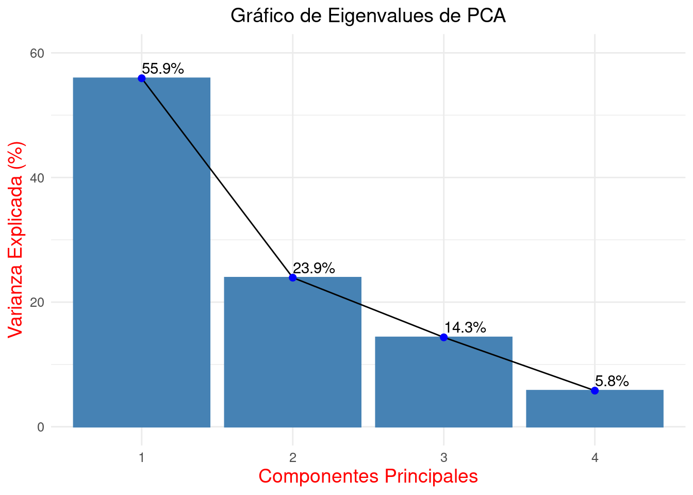
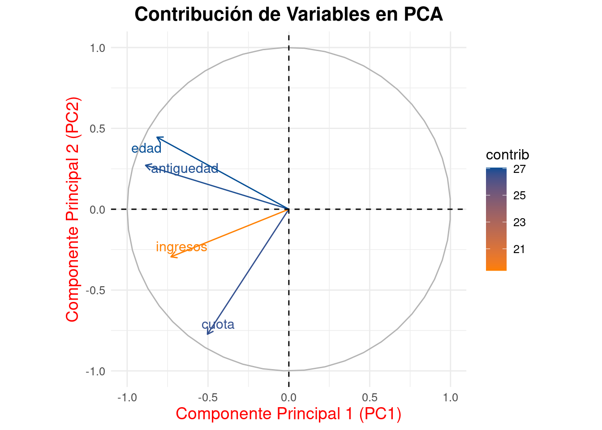
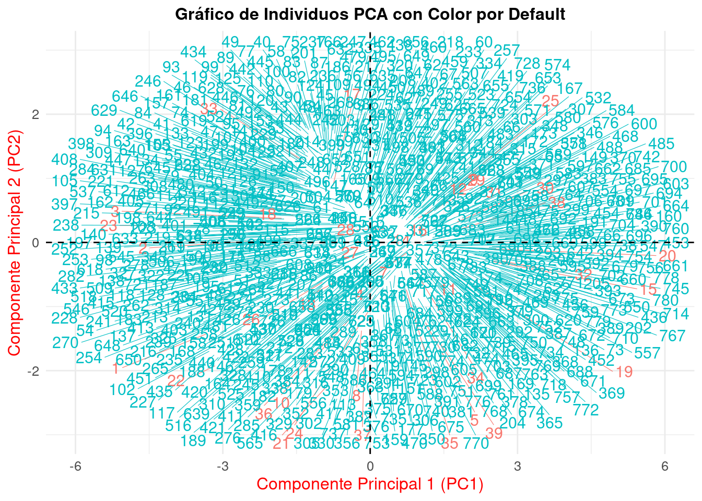

El Análisis de Componentes Principales (PCA, por sus siglas en inglés) es un método estadístico que transforma un conjunto de variables posiblemente correlacionadas en un número menor de variables no correlacionadas llamadas componentes principales. Este método es ampliamente usado para reducción de la dimensionalidad en análisis de datos, visualización de datos y para identificar patrones en datos de alta dimensión. Su prrincipal aplicación esta relacionada con la reducción una base de datos con muchas variables a dos o hasta tres variables independientes llamadas componentes principales, las cuales reunen un gran porcentaje de la variación contenida en la base de datos.
Los principales conceptos relacionados con el PCA son:
Correlación entre Variables: PCA se utiliza cuando existe correlación entre variables en un conjunto de datos. La idea es reducir la redundancia en los datos, resumiendo la información con menos variables.
Componentes Principales: Los componentes principales son las direcciones en los datos que maximizan la varianza (información) cuando se proyectan sobre ellos. El primer componente principal es la dirección que captura la mayor varianza, el segundo componente principal es la dirección que captura la segunda mayor varianza, y así sucesivamente, siempre ortogonales (no correlacionados) entre sí.
Varianza Explicada: Cada componente principal explica una parte de la varianza total de los datos originales. Al sumar la varianza explicada por cada componente, se obtiene una medida de cuánta información del conjunto de datos original se ha capturado.
Cálculo de Componentes: Matemáticamente, PCA implica el cálculo de la matriz de covarianza de los datos y luego la extracción de los valores propios y vectores propios de esta matriz. Los vectores propios que corresponden a los valores propios más grandes son los componentes principales.
Transformación de Datos: Los datos originales se pueden proyectar en el espacio de los componentes principales para transformarlos en un nuevo sistema de coordenadas. Esto resulta en una nueva representación de los datos donde las correlaciones han sido eliminadas.
Aplicaciones: PCA se usa en diversos campos como finanzas, genética, informática y más, donde la reducción de dimensionalidad es crucial para el análisis.
Interpretación: Aunque PCA es poderoso para reducir la dimensionalidad, la interpretación de los componentes principales puede no ser siempre intuitiva, ya que son combinaciones lineales de todas las variables originales.
Para una base de datos correspondiente a 780 clientes de una oficina bancaria se tienen las siguientes variables:
El Análisis de Componentes Principales tiene como objeto resumir la información contenida en cuatro variables a dos variables que puedan ser representadas en un plano carteciano
## Standard deviations (1, .., p=4):
## [1] 1.4956195 0.9783699 0.7576046 0.4816118
##
## Rotation (n x k) = (4 x 4):
## PC1 PC2 PC3 PC4
## antiguedad -0.5926455 0.2777622 0.1520487 -0.74060831
## edad -0.5454793 0.4553210 0.2485578 0.65829634
## cuota -0.3367282 -0.7905281 0.5057479 0.07680159
## ingresos -0.4876861 -0.3009920 -0.8119848 0.11066515Los dos primeros componentes explican un 79.8% de la variación total de la data. Este valor total corresponde a la suma de las varianzas de las variables.

Una de las gráficas importantes correponde al gráfico de variables donde se puede evidenciar la relación entre variables como la edad, antiguedad por un lado y el ingreso y la cuota por otro lado.

Este análisis tambien permite la representación de los individuos en un solo plano

Los clientes con default se visualizan con color rojo y se percibe que estan en los cuatro cuadrantes del gráfico
¿El objetivo principal del Análisis de Componentes Principales (PCA) es:
Respuesta Correcta: C) Reducir la dimensionalidad del conjunto de datos preservando la mayor cantidad de variación posible.
Un “componente principal” en PCA representa :
Respuesta Correcta: B) Una combinación lineal de las variables originales.
En el contexto de PCA, ¿qué significa la “varianza explicada” por un componente principal?
Respuesta Correcta: B) Es la proporción de la varianza total del conjunto de datos original atribuida a cada componente principal.
Pregunta 4:
El criterio que se utiliza comúnmente para decidir cuántos componentes principales retener en un análisis es:
Respuesta Correcta: C) Retener los componentes hasta que la suma acumulada de la varianza explicada alcance o supere un umbral, como el 80% o 90%.
¿Qué herramienta gráfica se utiliza a menudo para visualizar la importancia de los componentes principales en términos de varianza explicada?
Respuesta Correcta: D) Scree plot.